Konstruksi Khusus
Pembongkaran Atap
Pembongkaran atap pada area plant produksi beton.
PT. Pionirbeton Industri
Plant Puri Kembangan, Jakarta
Portofolio
Rekam jejak pekerjaan pada sektor industri, infrastruktur jalan, fasilitas kesehatan, dan ketenagalistrikan sesuai dokumentasi company profile.
Pembongkaran atap pada area plant produksi beton.
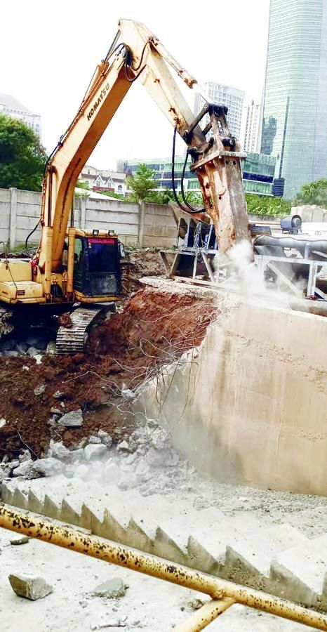
Pembobokan dinding beton pada fasilitas plant produksi.
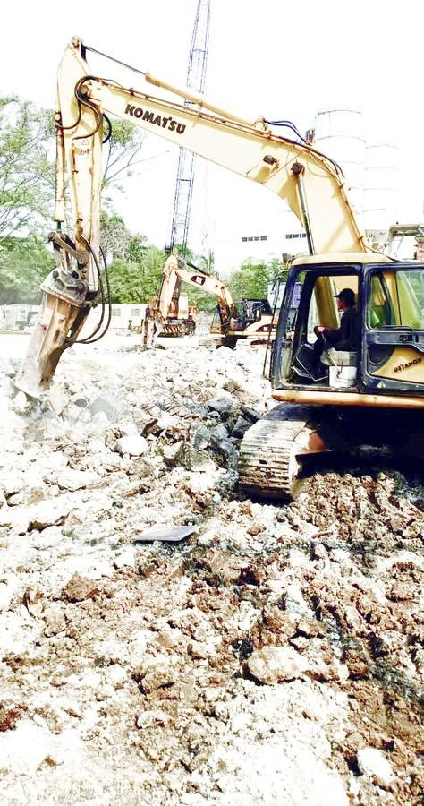
Pembobokan lantai beton area plant, termasuk pembersihan material bongkaran.

Pekerjaan pemadatan lahan basecourse untuk area bandara.

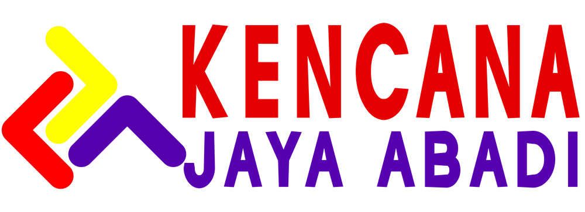
Pengaspalan jalan kawasan industri Keroncong.
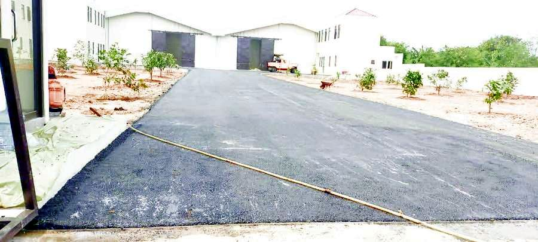
Pemadatan basecourse dan makadam pada kawasan industri.
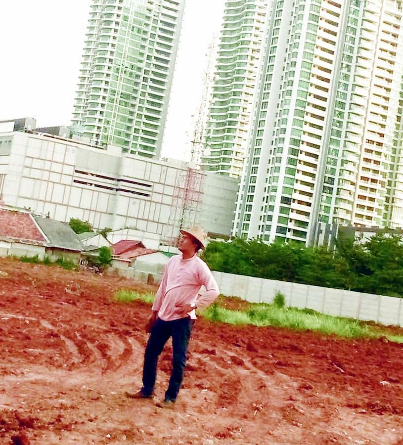
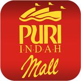
Penimbunan blok B pada area pengembangan lahan Puri Kembangan.


Penimbunan lahan pada area Jl. Raya Menceng.
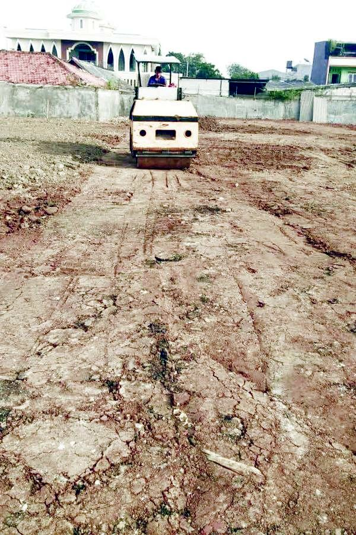
Pematangan lahan untuk kesiapan pekerjaan konstruksi berikutnya.

Pemadatan basecourse sebagai lapisan dasar perkerasan.


Pekerjaan bobokan perkerasan jalan tol pada ruas JOR.

Pekerjaan bobokan perkerasan jalan tol pada ruas Jagorawi.
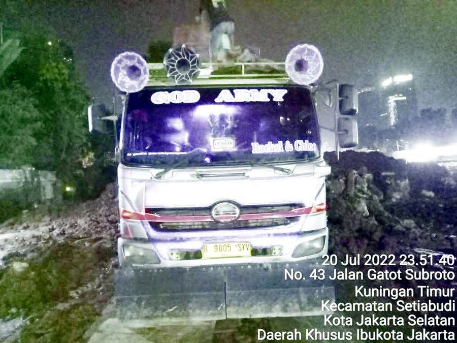
Pekerjaan galian basement pada area proyek di kawasan Kuningan.
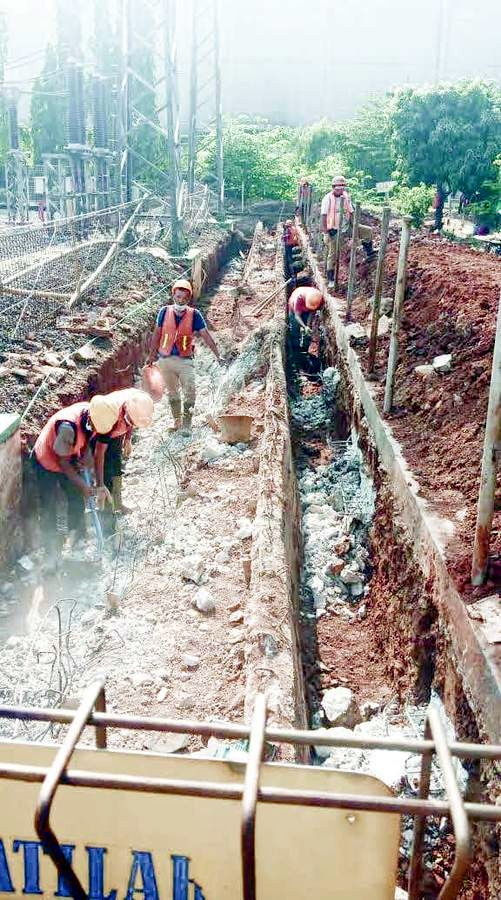

Penggalian saluran kabel untuk kebutuhan instalasi kelistrikan.
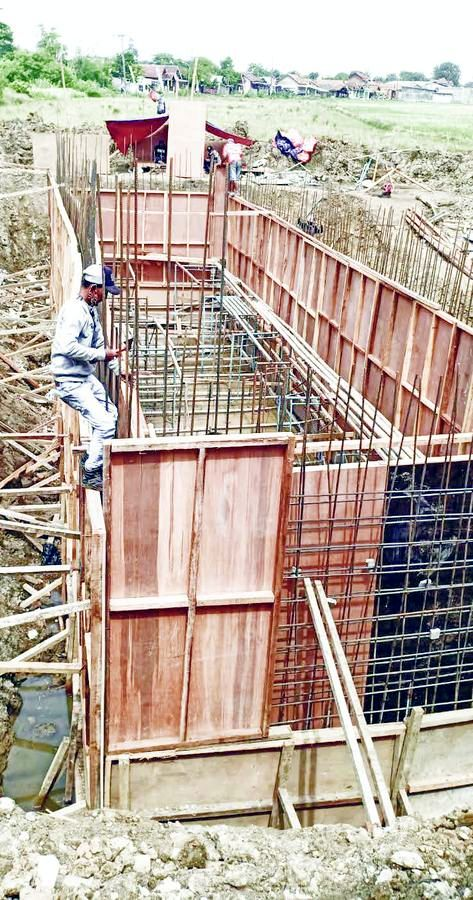

Pembuatan instalasi pengolahan air limbah (IPAL) dan ground water tank (GWT).

Pemasangan saluran udara (ducting) pada fasilitas rumah sakit.


Pemasangan aluminium foil pada ruang genset rumah sakit.

Pengecatan gardu PLN pada area rumah sakit.
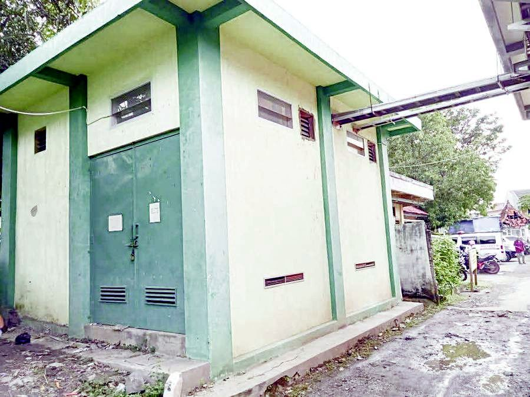
Pengecatan dinding luar gardu dan ruang genset.

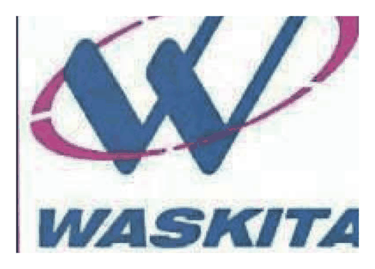
Pembobokan perkerasan beton pada ruas elevated JAPEK II dengan hydraulic breaker.
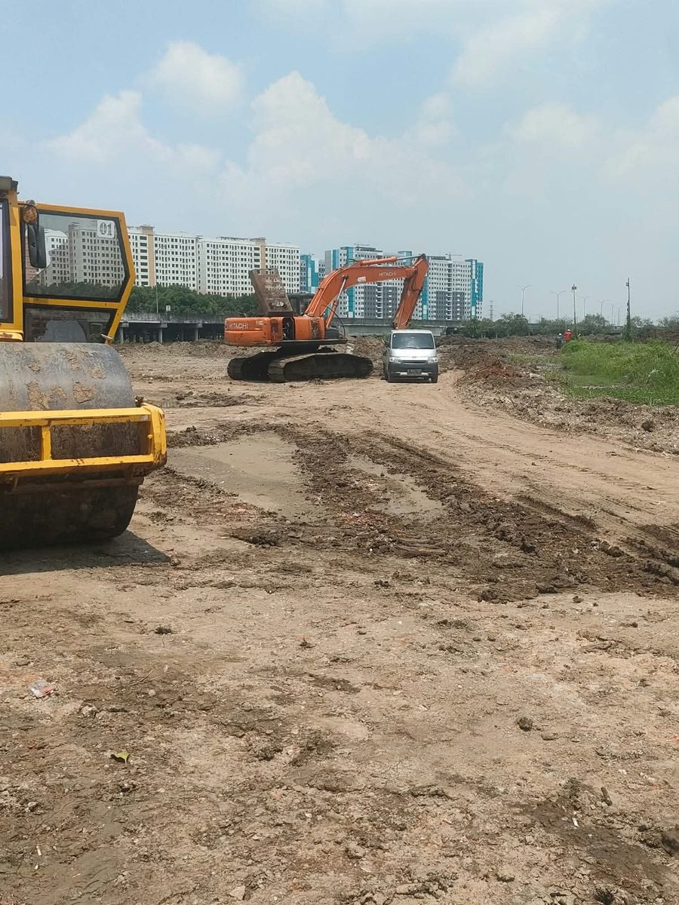

Penimbunan dan pemadatan lahan untuk kesiapan pekerjaan konstruksi.


Pekerjaan struktur, pembesian, dan pelat lantai pada pembangunan kantor.
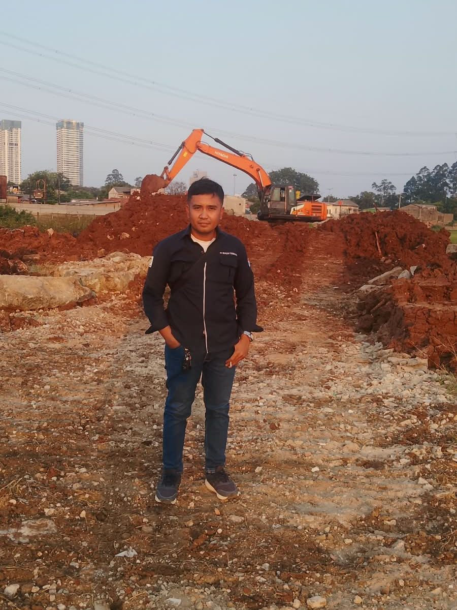

Penggalian dan pembuangan material ke area disposal pada proyek pembangunan.

Penggalian dengan long-arm excavator dan pengangkutan material tanah keluar area kerja.
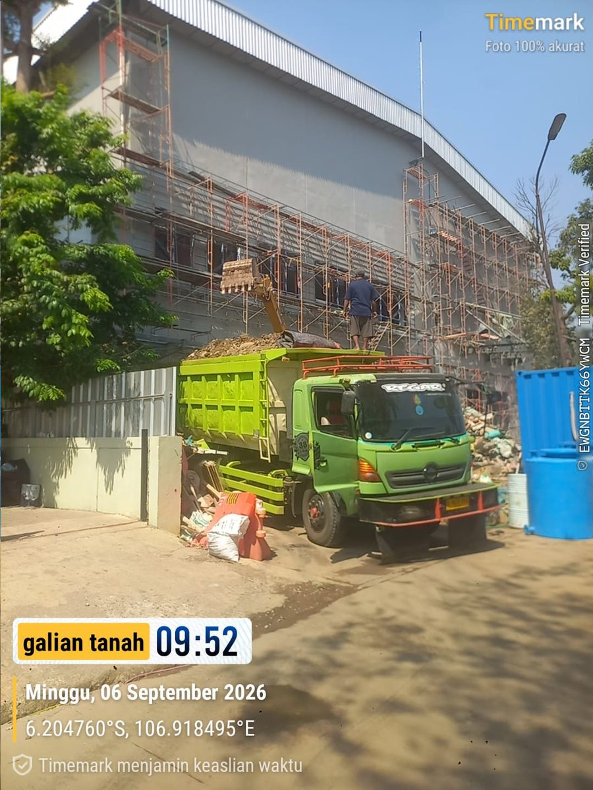

Pekerjaan struktur baja dan penyiapan area pada pembangunan fasilitas industri.

Pekerjaan cut and fill badan jalan beserta pembersihan material sisa.
Daftar lengkap pekerjaan yang terdokumentasi dalam company profile perusahaan, dipisahkan menurut jenis kegiatan pada setiap klien.